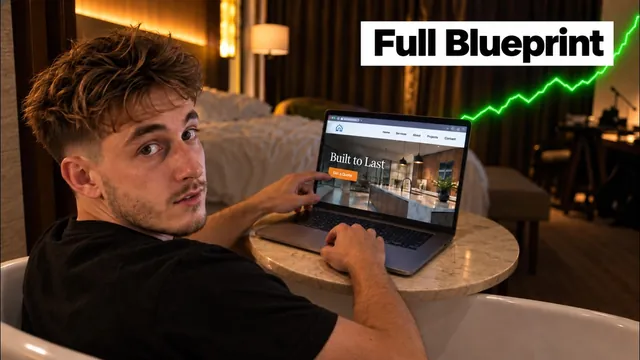

원가 0원으로 AI 웹사이트 팔아 마진 남기는 법

원본 영상 보기 →
- 무료는 손해가 아니라 진입 장벽 제거예요
- 매출 규모보다 매출의 분산이 사업의 맷집을 만듭니다
- 업종 선택 하나가 한 해 성과 전체를 좌우합니다
한 줄 요약
AI로 20분 만에 홈페이지를 뽑아 지역 업체에 완전 무료로 먼저 던져주고, 월 몇백 달러짜리 유지보수 계약으로 발을 들인 다음 자동화·컨설팅 같은 진짜 돈 되는 서비스로 넘어가는 영업 구조예요. 리모델링 업체 실제 사례로 처음부터 끝까지 보여 줍니다.
전체 내용 정리
왜 할인이 아니라 '완전 무료'일까요
패스트푸드점에서 버거를 싸게 팔고 나면 콜라와 감자튀김은 굳이 팔지 않아도 알아서 팔립니다. 버거는 거의 원가에 가깝고 진짜 마진은 음료와 감자튀김에서 나와요.
이 구조에서 두 가지 규칙이 나옵니다.
첫째, 다음에 팔 것은 반드시 지금 팔 것과 "같은 카운터"에 있어야 해요. 새 장비나 새 인력이 필요한 서비스라면 그건 감자튀김이 아니라 아예 다른 가게를 여는 것과 같습니다.
둘째, 버거가 안 팔리는데 감자튀김부터 준비하면 안 됩니다. 웹사이트, 자동화, 감사, 리텐션까지 네 가지 상품을 동시에 만들어 놓고 정작 하나도 못 파는 사람들이 흔한데, 하나를 사람들이 지겨워할 때까지 판 다음에야 두 번째를 얹어야 해요.
월 300달러 100곳이 월 1.5만 달러 2곳보다 강해요
월 1만 5천 달러짜리 고객 두 곳이면 매출은 월 3만 달러입니다. 그런데 예산이 잘리거나 담당자가 퇴사하는 이메일 한 통으로 매출의 절반이 그냥 날아가요.
반면 월 300달러짜리 고객 100곳이면 매출은 똑같이 3만 달러지만 한 곳이 나가도 1%만 줄고, 월말 리포트를 보고서야 알아차릴 정도입니다.
게다가 가격이 오를수록 기대치도 함께 올라가요. 300달러짜리 고객은 문제가 생기면 환불해 주고 넘어가면 끝이지만, 3천 달러짜리 고객은 그 자체로 한 달을 잡아먹는 분쟁이 됩니다.
판매도 결국 반복으로 느는 기술이에요. 300달러 모델이면 분기에 대화를 50번 하지만 1만 5천 달러 모델이면 다섯 번 정도밖에 못 합니다.
마지막으로 저가 상품은 해지가 귀찮아서 관성으로 유지되지만, 고가 상품은 분기마다 "이 돈을 계속 낼 가치가 있나" 검토당해요. 그래서 초보 단계에서는 소수의 고가 고객보다 다수의 저가 고객으로 발판을 만드는 쪽이 유리합니다.
어떤 업종을 고를지 정하는 네 가지 질문
치과, 메드스파, 로펌, 회계사, 배관공, 지붕 시공, 헬스장, 방역업체, 상업 청소, 조경업체, 웨딩 베뉴, 피부과까지 후보는 많지만 기준은 네 가지로 좁혀집니다.
첫째, 고객 한 명의 생애가치(LTV). 고객 한 명이 만 달러 가치라면 한 달에 일감 하나만 더 따내도 수수료를 서른 배는 회수해요. 반면 고객 가치가 40달러 수준이면 아무리 좋은 사람이어도 계속 비용만 나가는 관계가 됩니다.
둘째, 시장이 충분히 큰가. 몇 달 안에 잠재고객이 바닥나지 않을 정도의 총유효시장이 있어야 해요.
셋째, 그 업체가 충분히 "지저분한가". 견적, 일정 조율, 하도급 관리처럼 나중에 자동화나 컨설팅을 더 팔 여지가 있는 운영상의 복잡함이 있느냐예요. 완벽하게 돌아가는 업체는 애초에 당신을 필요로 하지 않습니다.
넷째, 경쟁. 이미 다들 영상에서 언급해서 하루에도 몇 번씩 콜드메일을 받는 업종(메드스파 같은)보다는, 아무도 콘텐츠를 만들지 않은 지루한 업종을 고르는 편이 낫습니다.
리모델링 업체가 네 가지를 전부 통과해요
미국 기준 주택 전체 리모델링 한 건이 평균 5만 2천 달러, 주방 리모델링만 해도 2만 7천~3만 5천 달러 선이라 고객 한 명의 가치가 압도적으로 높습니다.
조사에 따르면 미국 소상공인의 약 27%가 웹사이트 자체가 없는데, 건설·시공 업종에서는 이 비율이 45~56%까지 올라가요. 전문직 서비스업(15~25%)과 비교하면 거의 세 배 차이입니다. 절반 가까운 잠재고객에게는 비교 대상조차 없이 이쪽이 처음 보여 주는 웹사이트가 되는 거죠.
이들은 견적 산출, 현장 방문, 자재 소싱, 하도급 관리까지 양손이 다 찬 상태로 전화를 받는 경우가 많아 운영이 충분히 지저분해요. 그리고 다들 메드스파에만 몰려가 있어서 리모델링 업체를 대상으로 한 콘텐츠는 거의 없다시피 합니다.
단, 모든 블루칼라 업종이 다 해당되는 건 아니에요. HVAC처럼 일부 지역 서비스업은 웹사이트 자체가 크게 필요하지 않을 수도 있으니, 실제로 매출이나 업무 부담을 줄여 줄 수 있는 업종인지는 매번 따로 확인해야 합니다.
두 번째 달에도 계속 돈을 내는 이유
계약을 한 번 따내는 건 영업의 문제지만, 2년 차에도 계속 결제가 이어지게 만드는 건 완전히 다른 문제고 웹사이트 자체와는 큰 상관이 없어요.
첫째는 "관리되고 있다"는 확신입니다. 사이트가 멈추지 않고 인증서가 만료되지 않고, 문제가 생겨도 업체 사장이 고객에게 듣기 전에 먼저 알아채는 것. 이게 매달 몇백 달러의 값어치를 합니다. 이전에 웹사이트를 만들어 준 사람이 사라져서 로그인도 못 하고 전화번호 하나 바꾸는 데 800달러를 부른다는 경험을 다들 한 번쯤 해봤거든요.
둘째는 즉각적인 수정이에요. 새 서비스가 생기거나 사진, 가격이 바뀌면 그날 오후에 바로 반영돼야 합니다.
셋째는 리드가 실제로 들어오는 것. 월간 보고서가 아니라 사장의 전화가 실제로 울리는 경험이요.
그리고 설명 방식도 중요해요. "구글 리뷰를 늘려 드립니다" 같은 명사형 설명 대신, "리뷰가 늘면 검색 순위가 오르고, 순위가 오르면 전화가 늘고, 전화가 늘면 매출이 는다"처럼 기능이 아니라 결과로 말해야 사장이 체감합니다.
GoDaddy Airo로 실제로 만드는 법
이번 데모에서는 1985년부터 운영해 온 실제 리모델링 업체 사이트를 재구축했어요.
프롬프트는 이것뿐이었습니다. "이 업체를 다시 만들어 줘, 업체명과 가족경영 이력, 핵심 서비스는 그대로 유지하고 홈, 서비스, 프로젝트 갤러리, 소개, 문의 페이지로 구성해 줘." 5분 만에 첫 결과물이 나왔어요.
웹사이트가 아예 없는 업체를 가정한 두 번째 데모에서는 업체 소개, 차별점, 원하는 페이지 구성을 문장으로 풀어 넣는 것만으로 동일하게 작동했습니다.
GoDaddy가 실제 사용자 프롬프트 2만 6천 건을 분석해 보니 문제는 길이가 아니라 구조였다고 해요. 원칙은 여섯 가지입니다.
- 하지 말라는 것 대신 원하는 것을 구체적으로 — "싸구려처럼 보이지 않게"가 아니라 "색상을 다크브라운과 소프트옐로우로"
- 페이지, 섹션, 무엇이 고장났는지를 구체적으로 지목
- 프롬프트 하나에 한 가지 작업만 — 여러 요청 중 하나가 잘못돼도 나머지를 다시 하지 않아도 됩니다
- 업체명, 서비스 내용, 가격 같은 실제 사실은 절대 AI가 추측하게 두지 말 것 — 그럴듯한 가격표를 지어낼 수 있는데, 이게 실제 시공업체 사이트에 올라가면 곤란한 전화를 받게 돼요
- 거의 완성됐는데 아쉬우면 부족한 부분만 콕 집어 말하기
- 작업이 중간에 멈추면 그냥 "계속해 줘" 라고 입력하면 이어서 진행됩니다
리드를 실제로 잡는 기능
장식적인 부분이 끝났다고 리드를 잡는 사이트가 되는 건 아니에요. 실제로 돈이 되는 기능은 프롬프트 하나로 한 번에 추가합니다.
문의폼과 채팅 위젯을 하나의 공유 받은편지함으로 연결해 각 대화에 "미해결/고객 응답 대기" 같은 상태를 매기고, 무료 방문 견적 예약 페이지를 만들고, 견적 계산기와 리드 캡처(가격대를 보여 주기 전에 이름·이메일·전화번호를 먼저 받는 방식)를 붙이고, 견적서 제출·예약·문의가 들어오면 즉시 이메일로 알림을 보내고, 예약 시 스트라이프로 보증금을 결제받고, 사이트 하단에 관리자 로그인을 추가하고, 페이지별로 고유한 제목과 메타 설명까지 SEO를 한 번에 처리해요.
완성한 사이트는 소스코드를 내려받아 어디에든 호스팅할 수도 있습니다. 다만 이상적으로는 호스팅과 보안, 도메인까지 전부 대행사 쪽에서 계속 맡아서 업체가 나가기 어렵게 만드는 게 핵심이에요.
무료 크레딧 50개만으로도 사이트 전체를 완성할 수 있고 실제 도메인에 게시하는 단계부터 유료 플랜이 필요하니, 아직 고객이 확정되지 않은 단계에서는 매달 비용을 낼 필요가 없습니다.
영업 없이 고객을 뚫는 법
사이트를 다 만들어도 아직 게시하지는 않습니다.
게시하지 않은 상태의 프리뷰 링크를 보내면, 업체 사장 입장에서는 자기 도메인이나 계정에 아무것도 손대지 않은 채로 실제로 작동하는 결과물만 확인하는 셈이라 부담이 없어요.
이메일이나 문자로 접근할 때는 세 가지만 담습니다. 그 업체 사이트에 대한 구체적인 관찰 한 가지, "이미 새로 만들어놨다"는 사실, 그리고 링크 하나.
"15분만 통화 가능하신가요?" 같은 질문은 넣지 않아요. 이런 질문 자체가 이미 사람들이 무시하도록 학습된 카테고리이기 때문입니다.
업체 성격에 따라 채널도 달라요. 현장에서 일하는 블루칼라 업종은 이메일함을 거의 열어보지 않아 문자나 전화가 낫고, 로펌이나 회계사처럼 하루 종일 받은편지함을 보는 업종은 이메일과 링크드인이 통합니다. 리모델링 업체는 그 중간이라 셋 다 테스트해 볼 만하고요. 정형화된 템플릿보다 업체 상황을 구체적으로 언급한 메일이 응답률에서 3~5배 차이가 났습니다.
신뢰를 얻고 나면 두세 달째쯤 되는 시점에 견적 시스템, 리드 팔로우업, 애프터아워 응대 같은 추가 기능을 계약에 얹으면서 자동화나 컨설팅 같은 진짜 마진이 큰 서비스로 자연스럽게 넘어갈 수 있어요.
핵심 인사이트
- 무료는 손해가 아니라 진입 장벽 제거예요: AI 덕분에 웹사이트 제작 시간이 20시간에서 20분으로 줄면서, 예전에는 비용이었던 무료 제공이 이제는 영업 비용이 거의 안 드는 문 열기 수단이 됐습니다.
- 매출 규모보다 매출의 분산이 사업의 맷집을 만듭니다: 같은 3만 달러 매출이라도 저가·다수 구조는 고객 이탈 한 번에 무너지지 않고, 그 과정에서 영업 반복 경험치까지 훨씬 빨리 쌓여요.
- 업종 선택 하나가 한 해 성과 전체를 좌우합니다: 아무도 콘텐츠를 만들지 않은 업종, 고객 가치가 높은 업종, 운영이 지저분해서 다음 서비스를 팔 여지가 있는 업종을 겹쳐서 고르면 승률이 크게 달라져요.
오늘 당장 해볼 것
- 접근하려는 업종에 대해 "고객 1인 가치, 잠재고객 수, 운영 복잡도, 경쟁 강도" 네 가지를 각각 한 줄로 채점해 보세요. 4개 중 몇 개를 통과하는지가 바로 보입니다.
- 접근하려는 업체 웹사이트나 SNS를 5분만 살펴보고 "가격 안내가 없다", "예약 기능이 없다"처럼 구체적으로 아쉬운 점 하나를 메모해 두세요. 나중에 연락할 때 이 관찰 하나만 언급하고 링크만 보내면 됩니다.
- 첫 접촉 메시지에서 "시간 되실 때 15분만 통화 가능하실까요?" 같은 질문형 문장을 전부 지우고, "이미 만들어 봤습니다, 여기 확인해 보세요" 형태의 결과물 우선 문장으로 바꿔 보세요.